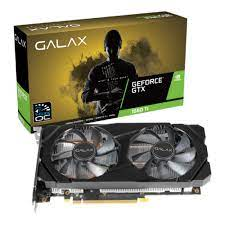
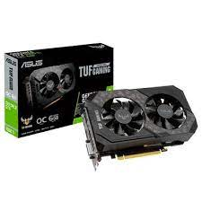

Modelos das GTX linha 16
- GTX1660TI 
- GTX1660Super 
- GTX1660

"Como fazer um Over correto"
Toda linha 1660 TI
Como funciona a mineração de bitcoins?
A mineração é o processo por meio do qual novos bitcoins são criados. Embora ela possa ser uma atividade mais lucrativa do que a negociação da criptomoeda em exchanges, hoje em dia ela se tornou praticamente inviável para o investidor comum. Analistas consultados pela Forbes afirmam que é praticamente impossível minerar usando um computador pessoal.